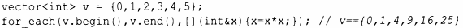

⇐12.5 Предикаты 12.7 Концепты (С++20)⇒
Общее определение алгоритма - "набор конечного числа правил, задающих последовательность выполнения операций для решения задачи определенного типа ". [и] и.1wеет пять важных особенностей: Конечность ." Определенность... Ввод ". Вывод... Эффективность" [31, § 1.1 ]. В контексте стандартной библиотеки С++ алгоритм является шаблоном функции, работающим с последовательностями элементов.
Стандартная библиотека предоставляет десятки алгоритмов. Алгоритмы определены в пространстве имен s td и представлены в заголовочном файле <algori thm>. Эти алгоритмы стандартной библиотеки принимают в качестве входных данных последовательности. Полуоткрытая последовательность от Ь до е записывается как [Ь:е). Вот несколько примеров.
| Избранные стандартные алгоритмы | |
|---|---|
| f=for_each(b,e,f) | Для каждого элементах в [Ь:е) выполнить f (х) |
| p=find(b,e,x) | р - первый элемент в [Ь:е), такой, что *р==х |
| p=find_if(b,e,f) | р - первый элемент в [Ь:е), такой, что f ( *р) |
| n=count(b,e,x) | п - количество элементов *q в [Ь:е), таких, что *q==x |
| n=count_if(b,e,f) | п - количество элементов *q в [Ь:е), таких, что f ( *q) |
| replace(b,e,v,v2) | Замена элементов *q в [Ь:е), таких, что *q==v, на v2 |
| replace_if(b,e,f,v2) | Замена элементов *q в [Ь:е), таких, что f ( *q), на v2 |
| p=copy(b,e,out) | Копирование (b:е) в (out:p) |
| p=copy_if(b,e,out,f) | Копирование элементов *q из [Ь:е), таких, что f ( *q), в [out:p) |
| p=move(b,e,out) | Перемещение [Ь:е) в [out:p) |
| p=unique_copy(b,e,out) | Копирование [Ь:е) в [out:p); соседние дубликаты не копируются |
| sort (Ь, е) | Сортировка элементов [Ь:е) с использованием < в качестве критерия сортировки |
| sort (Ь, е, f) | Сортировка элементов [Ь:е) с испольэованием f в качестве критерия сортировки |
| (pl, р2) =equal range (Ь, е, v) | [pl:p2) является подпоследовательностью отсортированной последовательности [Ь:е) со значением v; по сути, бинарный поиск v |
| p=merge (Ь, е, Ь2, е2, out) | Слияние двух отсортированных последовательностей, [Ь:е) и [Ь2:е2), в [out:p) |
| p=merge (Ь, е, Ь2, е2, out, f) | Слияние двух отсортированных последовательностей, [Ь:е) и [Ь2:е2), в [out:p) с использованием f для сравнения |
Эти и многие другие алгоритмы (например, § 14.3) могут применяться к элементам контейнеров, строк и встроенных массивов.
Некоторые алгоритмы, такие как replace () и sort (), изменяют значения элементов, но ни один алгоритм не добавляет или не удаляет элементы контейнера. Причина в том, что последовательность не идентифицирует контейнер, который содержит ее элементы. Чтобы добавить или удалить элементы, вам нужно что-то, знающее о конкретном контейнере (например, back_inserter; §12.1), или непосредственное обращение к контейнеру (например, push_back () или erase (); § 11.2).
Для операций, передаваемых в качестве аргументов, очень часто применяются лямбда-выражения. Например:
Алгоритмы стандартной библиотеки, как правило, более тщательно разработаны, специфицированы и реализованы, чем средний созданный вручную цикл, поэтому их нужно знать и использовать, предпочитая коду, написанному на "голом" языке.